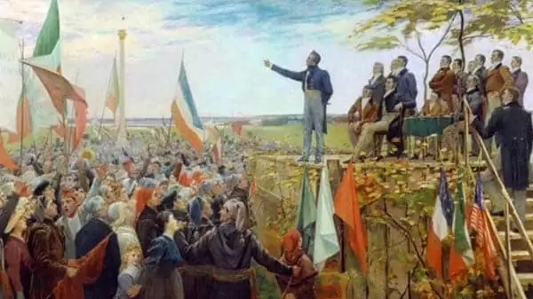
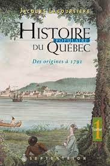
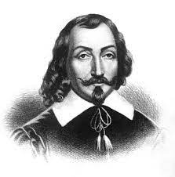
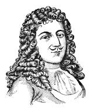
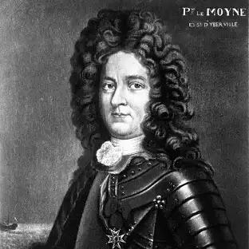
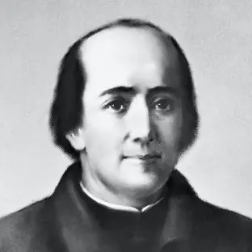
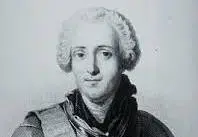
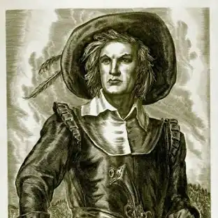
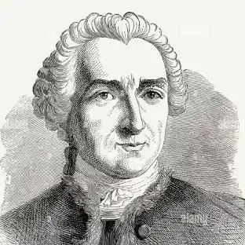

Un patrimoine riche
La ville de Québec, fondée en 1608 par Samuel de Champlain, est l'une des plus anciennes villes d'Amérique du Nord et un lieu emblématique de l'histoire du Canada. Voici un aperçu de son histoire :
|  |
Les Premiers Habitants : Avant l'arrivée des Européens, la région de Québec était habitée par des peuples autochtones, principalement les Iroquoiens de la vallée du Saint-Laurent. Ces peuples vivaient de l'agriculture, de la pêche et du commerce, et leur présence dans la région remonte à des milliers d'années. Fondation par Samuel de Champlain (1608) : En 1608, Samuel de Champlain, un explorateur français, a fondé Québec sur le site de Stadaconé, un village iroquoien situé sur le fleuve Saint-Laurent. La ville a été fondée dans le cadre des efforts de la France pour coloniser la Nouvelle-France. Québec devint un poste de traite majeur, en particulier pour la fourrure, et une base stratégique pour l'exploration et l'expansion françaises en Amérique du Nord. Québec sous le Régime Français (1608-1763) : Pendant les 150 ans de la colonie française, Québec a joué un rôle clé en tant que capitale administrative et militaire de la Nouvelle-France. Le développement de la ville a été marqué par la construction de fortifications, dont les célèbres remparts, qui existent encore aujourd'hui, faisant de Québec la seule ville fortifiée en Amérique du Nord au nord du Mexique. La ville a également été un centre religieux et culturel, avec l'établissement d'institutions importantes telles que l'évêché de Québec (1674) et l'Université Laval, l'une des premières institutions d'enseignement supérieur au Canada. |
|
La Conquête Britannique (1759-1763) : La guerre de Sept Ans (1756-1763) a eu un impact majeur sur Québec. En 1759, la bataille des Plaines d'Abraham, une confrontation décisive entre les forces britanniques menées par le général James Wolfe et les forces françaises dirigées par le marquis de Montcalm, a entraîné la chute de Québec aux mains des Britanniques. En 1763, le traité de Paris officialisa la cession de la Nouvelle-France à la Grande-Bretagne, marquant la fin du régime français à Québec. Québec sous le Régime Britannique (1763-1867) Sous domination britannique, Québec a vu l'arrivée de colons anglophones, mais la majorité de la population est restée francophone. Le Acte de Québec de 1774 a permis aux habitants de conserver leurs lois civiles françaises, leur langue et leur religion catholique. La ville a continué d'être un centre administratif important, jouant un rôle crucial dans les rébellions de 1837-1838 et les luttes pour la réforme démocratique au Canada. Confédération Canadienne (1867) En 1867, Québec est devenue une province du Canada lors de la formation de la Confédération canadienne. La ville de Québec, bien que perdant son statut de capitale nationale au profit d'Ottawa, est restée la capitale provinciale du Québec et un centre culturel, religieux et politique majeur. |
 |
|
XXe Siècle et Aujourd'hui : Au cours du 20e siècle, Québec a connu une industrialisation et une modernisation croissante. Cependant, la ville a aussi préservé son riche patrimoine historique, en particulier avec le Vieux-Québec, un quartier qui est devenu en 1985 un site du patrimoine mondial de l'UNESCO. Le Château Frontenac, l'un des hôtels les plus célèbres du monde, et les remparts de la vieille ville sont des symboles importants de son héritage. Québec est aujourd'hui une ville dynamique, combinant histoire, culture et modernité. Elle est reconnue pour sa qualité de vie, son tourisme florissant, et son rôle dans l'histoire du Québec et du Canada. |
Les pères fondateurs de Québec
|

Samuel de Champlain |
Pierre Boucher |

Jean Talon |

Pierre Le Moyne d'Iberville |
|

Jacques Marquette |

François-Gaston de Lévis |

Paul de Chomedey de Maisonneuve |

Louis-Joseph de Montcalm |